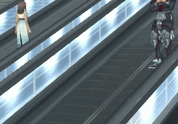
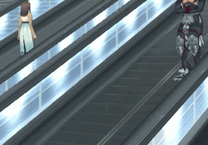

Anyways, back to the fanpage. Xenosaga is
really interesting. It's a trilogy of three JRPGs that all came out on the PlayStation 2. It's kind of infamous
for using the Bible as inspiration, leading to some pretty hilarious content.
Now I get to say that my sister’s favorite character is the antichrist. My favorite character is Albedo, one of the villains.
He…
has a lot going on. The second game in the series is mostly
about him, which is why it's my favorite. I think his dialogue has made
me feel every single human emotion at some point.
And of course they're games, too, which have
turn-based combat with lots of strategic options (and cool animations).

 
